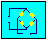
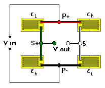

4-Arm (Differential) BridgeAssociated Application
General Considerations
This unique full-bridge arrangement eliminates the sensitivity of the cantilevered beam transducer to location of the point of load application. In this arrangement, four gages are installed on the same side of the beam to measure axial bending strains. Two are installed in an area of higher strain, and two in a lower strain area. Bridge output is proportional to the difference in strain at the two gage locations, regardless of actual strain magnitudes. Typically used in force measuring applications (or weighing) where the actual point of load application is variable.

The bridge output, based on a uniaxial stress field, varies nonlinearly with strain.
Inputs (Limits)
Strain (-5000 to +5000 microstrain)
Gage Factor (1.0 to 5.0)
Calculations
Output (mV/V)